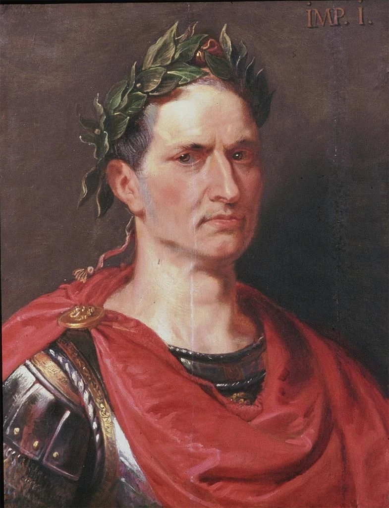
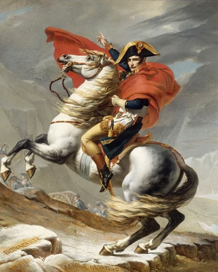
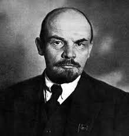
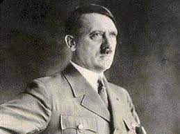

Cele mai importante personalitati istorice |
Gaius Iulius Caesar | Rolul său a fost esențial în instaurarea dictaturii la Roma, lichidarea democrației Republicii și instaurarea Imperiului Roman. A provocat războaie de cucerire fără acordul senatului roman. Cucerirea Galiei, plănuită de Cezar, a inclus sub dominația romană teritorii până la Oceanul Atlantic. În anul 55 î.Hr.
Cezar a lansat prima invazie romană în Marea Britanie. |  |
Napoleon Bonaparte | În prima decadă a secolului al XIX-lea a opus armatele Imperiului Francez împotriva fiecărei puteri majore europene și a dominat Europa continentală printr-o serie de victorii militare. A menținut sfera de influență a Franței prin constituirea unor alianțe extensive și prin numirea prietenilor și membrilor familiei în calitate de conducători ai altor
țări europene sub forma unor state clientelare franceze. |  |
Vladimir Ilici Lenin | A fost un revoluționar rus care a condus partidul bolșevic, primul premier al Uniunii Sovietice și fondatorul ideologiei cunoscute sub numele de leninism. S-a născut în Simbirsk (Ulyanovsk) avându-i
ca părinți pe Ilia Ulianov și Maria Alexandrovna. |  |
Adolf Hitler | Ajuns la putere în 1933, Hitler a transformat țara într-o dictatură monopartid bazată pe ideologia totalitaristă și autoritaristă a național-socialismului. Politica sa expansionistă agresivă este considerată principala cauză a izbucnirii celui de-al Doilea Război Mondial, soldat cu pierderi omenești colosale. De numele său sunt legate numeroase crime împotriva umanității, printre care punerea în aplicare a unui plan naționalist și rasist de exterminare în masă a evreilor și altor „indezirabili” din Europa,
precum și lichidarea adversarilor politici din Germania |  |